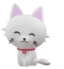
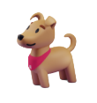
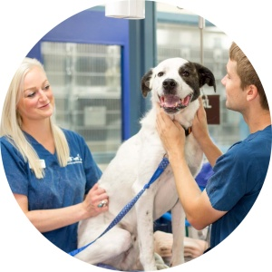
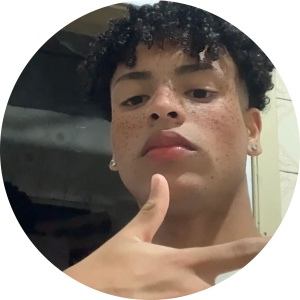

|
Nós da PollyPet estamos na classificação mundial dos melhores PetShops, um dos melhores cuidadores de bichinhos do mundo inteiro. Temos também a parte comercial contando com os melhores petiscos e brinquedos para seus bebês mais preciosos, visando aos nossos produtos, possuimos os produtos mais adequados e qualificados para poder tratar todos e de todas as raças da melhor forma e melhor qualidade.
|  |  |
Se você não tem um bichinho em casa para alegrar a todos com o jeito bobo e brincalhão, já pensou em adotar um? Aqui na PollyAdoção temos um espaço destinado ao resgate e adoção de animais de rua. Após o resgate, tratamos os bichinhos da melhor forma, com a nossa equipe veterinária e equipe estética.
| Logística | |
|  | Polly Adoção |
| Vendas/Marketing |
|  | CEO |